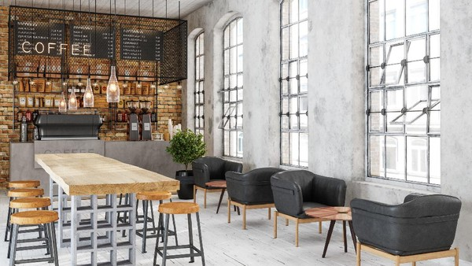
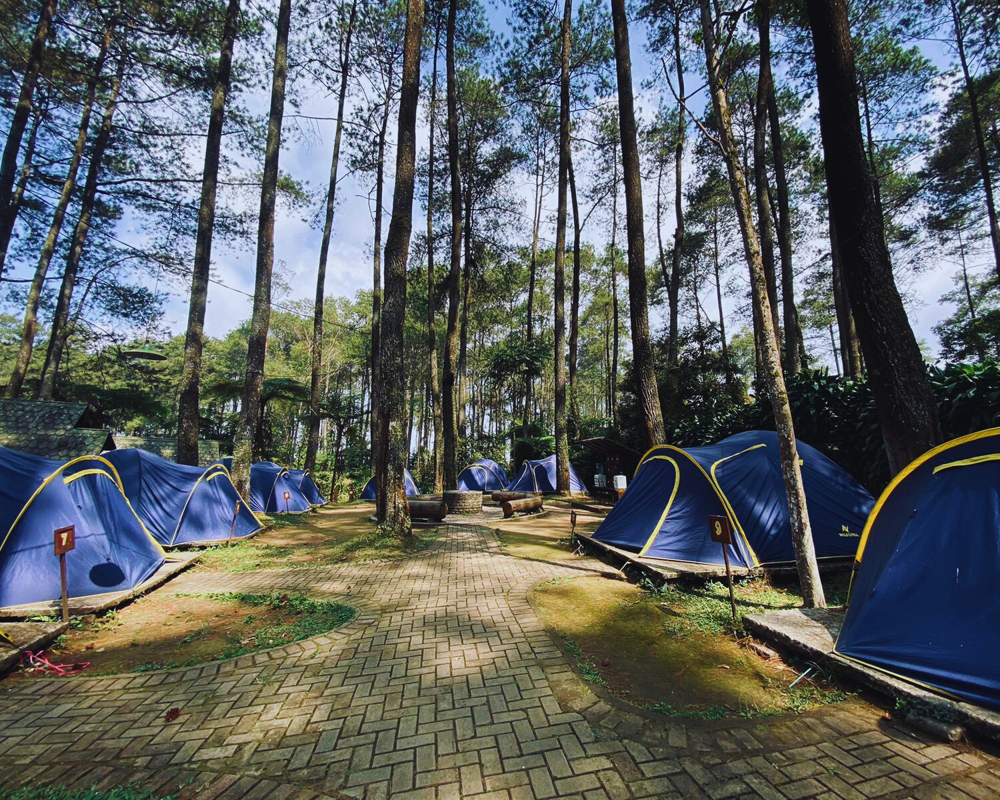
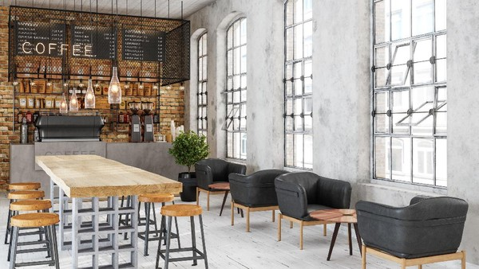
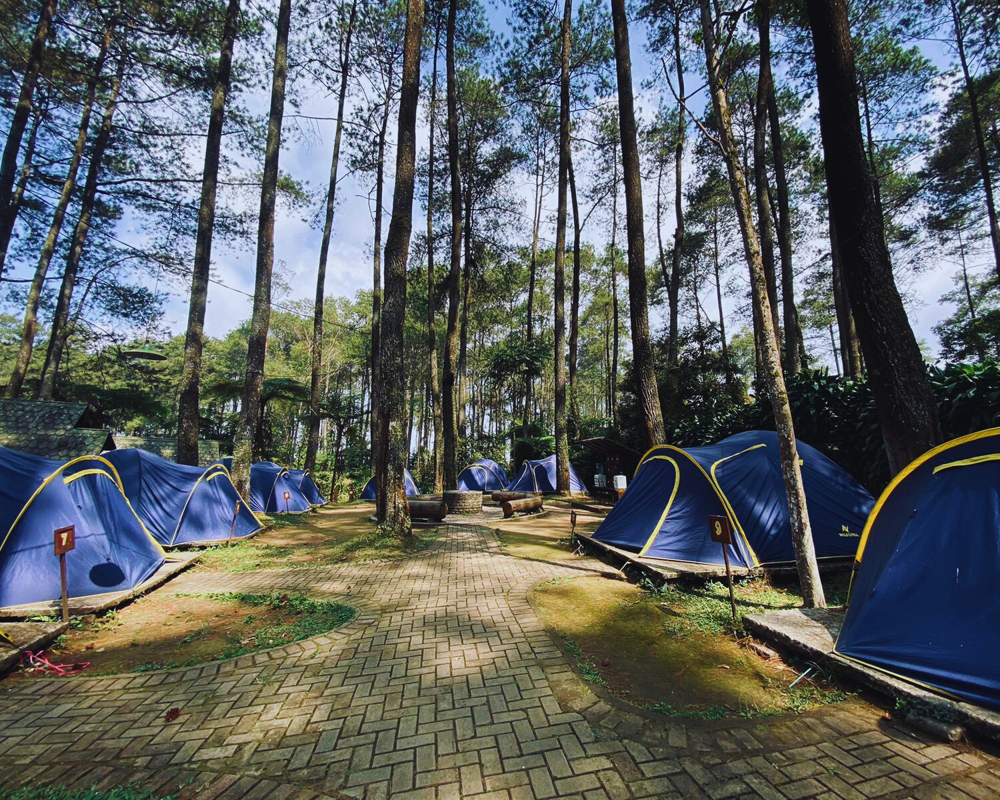

sampai waktu healing yang nyenengin banget.
Tiap foto punya cerita, dan tiap cerita punya kenangan yang nggak bisa diganti.
Aku suka banget ngeliat foto-foto ini lagi karena bisa bikin aku senyum sendiri,
inget betapa banyak hal kecil yang patut disyukuri💗
Yuk, liat-liat galerinya! Siapa tahu kamu juga ikutan ngerasa tenang dan happy✨


  
 